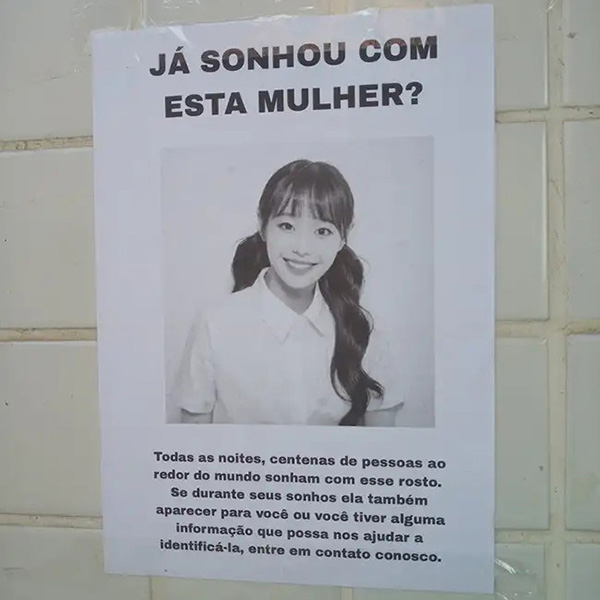
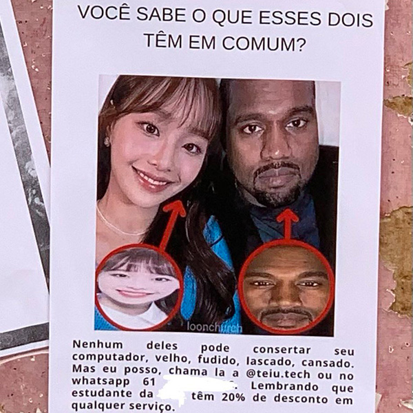
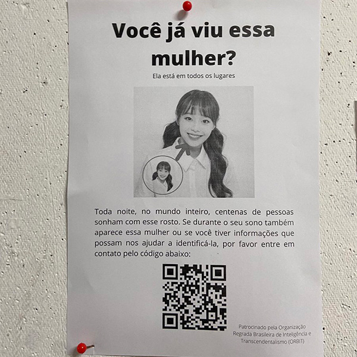

Voltar
Controversias
Além de aparecer nos sonhos de estranhos para aumentar sua fama mundial, apoia o fim das famílias para que ninguém possa dividir seu albúm, fazendo com que as vendas aumentem, e ainda por cima, se ve como a verdadeira "idol", sendo o único ser que deve ser idolatrado. Recentemente, tem sido bastante grossa com seus fãs, negando-se a consertar computadores e fazendo propaganda para marcas ofensivas.


